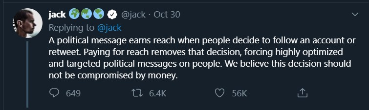

Political Reach on Twitter Without the Political
Advertising
On October 30th, 2019,
Twitter’s CEO,
Jack Dorsey announced that Twitter will stop accepting political ads to reduce significant risk to politics.


The
announcement comes amid
the scrutiny of social media companies’ handling of political ads. Large social media
companies, such as Facebook, have been criticized for allowing politicians to run false advertisements.
This decision puts Twitter
at odds with other social media companies that have defended their policies of not fact-checking political
ads.
Quantitative and Qualitative
Data
Quantitative Data is word-based so it describes qualities of things. An example would be
a heatmap with a color gradiant scale because each color represents a range of numerical values.
Qualitative Data is numerical and it records quantities.
-->